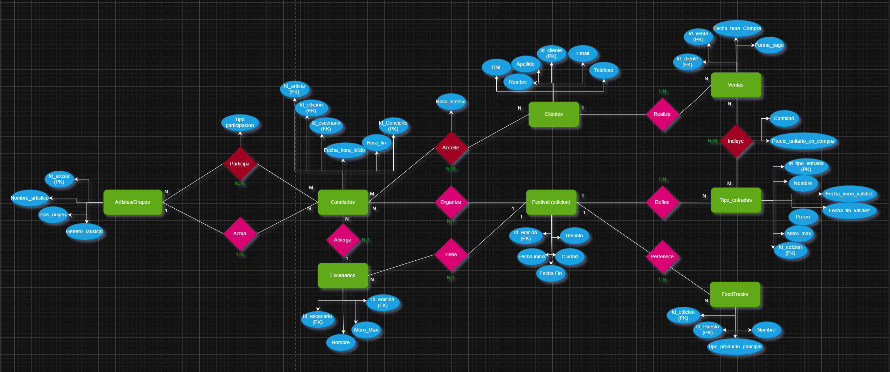

En la asignatura de Implantación de Sistemas Operativos, llevé a cabo la configuración de una distribución RAID 5 en Windows Server, comprendiendo el funcionamiento del almacenamiento redundante, la tolerancia a fallos y la gestión de volúmenes a nivel de servidor.

En Gestión de Bases de Datos, diseñé y representé un modelo Entidad–Relación utilizando draw.io, basado en la organización de un festival de verano ficticio llamado RockFest. Posteriormente, este modelo fue transformado a su correspondiente modelo relacional, aplicando criterios de normalización y coherencia estructural.

Dentro de la asignatura de Fundamentos de Hardware, desarrollé varios trabajos de carácter técnico y documental. Entre ellos, la elaboración de un manual de montaje y mantenimiento de equipos, que incluye la configuración de un ordenador destinado a un departamento de dibujo técnico y el reconocimiento detallado de los componentes de una placa base. Además, realicé un manual de usuario de herramientas software, compuesto por cuatro bloques elegidos de forma personal:
Configuracion equipo y reconocimiento placa
Manual Clonezilla.
Manual de instalación de una máquina Kali Linux.
Manual de configuración de un RAID 6 en Kali Linux.
Manual de uso e interpretación de resultados de la herramienta UserBenchmark.
En la asignatura de Itinerario Personal para la Empleabilidad, realicé un cuestionario y trabajo de análisis sobre el convenio colectivo, dentro del bloque Descubriendo nuestro convenio, orientado a comprender el marco laboral y profesional del sector.
Descubriendo nuestro convenio colectivo
En Administración y Planificación de Redes, realicé prácticas de subnetting y simulaciones de redes mediante Cisco Packet Tracer, trabajando la planificación de direcciones IP y la interconexión de dispositivos en distintos escenarios.
En Fundamentos de Computación en la Nube, participé en actividades de evaluación y refuerzo de conocimientos mediante herramientas interactivas como Kahoot, afianzando conceptos básicos relacionados con los servicios cloud.
y Finalmente en la asignatura de Lenguaje de Marcas, desarrollé mi portfolio personal utilizando HTML y CSS, aplicando los conceptos básicos de estructura, semántica y estilo en documentos web.
Todo este trabajo académico se ha desarrollado en paralelo a mi ámbito personal y laboral, ya que actualmente me encargo de la gestión logística y administrativa del bar musical que llevo junto a mi pareja BELLAKEO. Compatibilizar una formación técnica exigente con la organización de horarios, gestiones y responsabilidades reales ha supuesto un reto complejo y altamente enriquecedor, que ha reforzado mi capacidad de organización, constancia y compromiso. Afrontar ambos caminos de manera simultánea hace que la consecución de cada meta alcanzada tenga un valor añadido, tanto a nivel profesional como personal.